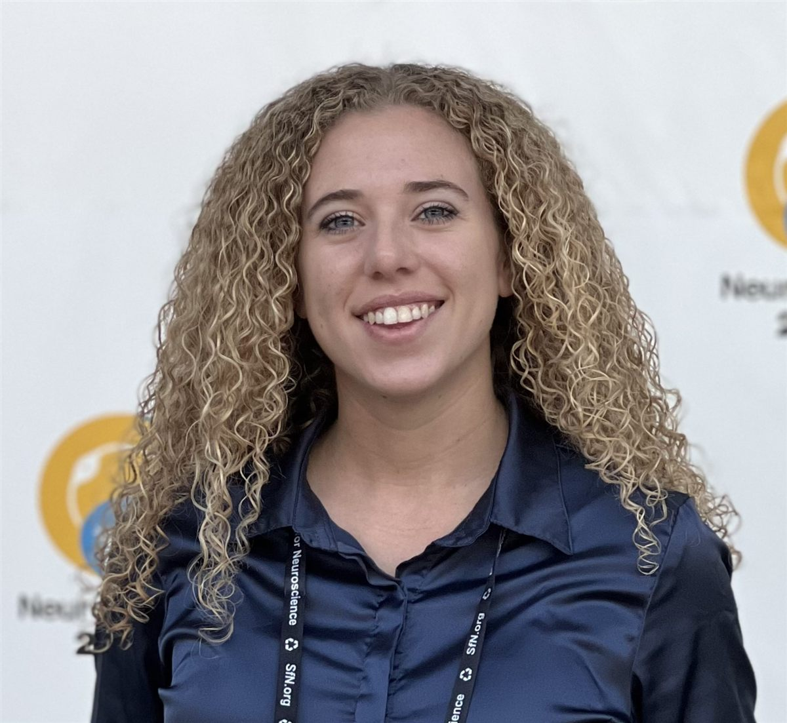

I design affordable microprocessor knees.
I work in the CREATE / Goldfarb Lab on hydraulic knee design and control for semi-powered knees, from benchtop testing to human-subject evaluation.

Marion Hagstrom
I build lower-limb prostheses that more people can afford and use.
I’m a Ph.D. student in Mechanical Engineering at Vanderbilt, advised by Dr. Michael Goldfarb in the CREATE / Goldfarb Lab. My research combines prosthetic design, wearable-device control, and human biomechanics.
I develop an affordable microprocessor-controlled knee and control strategies for semi-powered knees, including backward walking and cycling. The work covers hydraulic design, prototyping, benchtop testing, and human-subject evaluation.
I earned my B.S. in Biomedical Engineering, magna cum laude, at the University of Florida. Working in a prosthetics clinic shaped how I connect design decisions to everyday use.
- Interests
- Accessible prosthetic design · Assistive robotics · Human biomechanics · Wearable-device control · Rehabilitation engineering · Translational medical technology
- Tools
- MATLAB / Simulink · SolidWorks · ANSYS / FEA · VICON · XSENS · Arduino · Machining · CNC · 3D printing
- Translation
- Licensed patent · UVA LVG I-Corps
- Location
- Nashville, Tennessee
Current projects

Affordable microprocessor knee (AMPK)
A compact knee built around the essential microprocessor-controlled functions. Design targets: cost, build height, and consistent behavior.
Project details →Backward-walking control
Swing assistance for backward stepping with a semi-powered knee. Measures: knee motion, foot clearance, compensatory hip motion.
Project details →Movement across activities
Forward walking, backward walking, and stair ascent with a semi-powered knee. Focus: symmetry and controller–user interaction.
Project details →
Wearable design at the Venice Biennale
Collaborative robe for artist María Magdalena Campos-Pons. Final fittings and stage assistance in Venice.

Headbands for pediatric hearing assessment
Headbands that keep a bone conductor in place during children’s hearing tests. For a Vanderbilt AuD capstone.
Timeline
Select a row for details.
Education and research
-
Research assistant. Modeled brain connectivity with MATLAB and graph theory to study potential biomarkers for Alzheimer’s disease.
-
Magna cum laude. Undergraduate Excellence Award (BME of the Year). Former President of Generational Relief in Prosthetics (GRiP).
-
Research assistant in the Goldfarb Prosthetics Engineering Lab. Hydraulic design for an affordable knee, control for semi-powered knees (backward walking, cycling), and human-subject evaluation with motion capture and wearable sensors.
Teaching and leadership
-
Senior Design Seminar (Fall 2024), System Dynamics Lab (Fall 2025, including a revision of the haptic paddle lab hardware), Mechatronics (Spring 2026).
-
Vice President of the Mechanical Engineering Graduate Association.
-
Leading an eight-person executive team and representing more than 50 graduate and postdoctoral students. Continuing for AY 2026–2027.
Talks, publications and honors
-
2022: two neuroscience posters. 2023: Bioengineering for Global Health poster. 2025: Nemertes [Next] research lab presentation (Best [Next] Thing Award). 2026: IROS poster, AAOP oral presentation, Firestarter Pitch Competition. All talks →
-
Prospective value of a backward-walking controller for a swing-assist knee prosthesis. Hagstrom, Marsh, Goldfarb. Publication and data →
-
2023: Yale CBIT Global Prize, Russell G. Hamilton Scholar, Dean’s Graduate Fellowship. 2025: NSF GRFP Honorable Mention, Best [Next] Thing Award. 2026: Dean’s Graduate Fellowship renewed for 2026–2028, School of Fish scholarship.
Highlights
- 2026–2028
- Dean’s Graduate Fellowship renewed.
- Fall 2026
- Mentoring four undergraduate researchers. MEGA President for AY 2026–2027.
- Oct 2026
- Pitched the affordable microprocessor knee at Vanderbilt’s Firestarter Pitch Competition.
- 2026
- Presented backward-walking controller research at IEEE/RSJ IROS.
- 2026
- Presented semi-powered knee control at the AAOP Annual Meeting.
In the news
STEM meets style: Students adapt engineering skills for high fashion, art experience ↗
The Venice Biennale garment for María Magdalena Campos-Pons.
Vanderbilt Journalism Lab · Dec 2025How will healthy assisted movement improve for above-the-knee amputees? ↗
My work in the CREATE Lab on accessible prosthetic knees.
Independent Florida Alligator · Apr 2024It isn’t just what you learn: The value of experience for STEM ↗
Hands-on engineering, mentorship, and my path from GRiP to prosthetics research.
Get in touch.
Prosthetics, assistive technology, and moving research into practical devices.